Sampled response maps. Hatching denotes missing estimates; counts show accepted seeds. Curvature and system size are coupled. The tissue is flat.
Methods and failures · Means, SEM and counts (CSV) · Proposed dynamics experiments
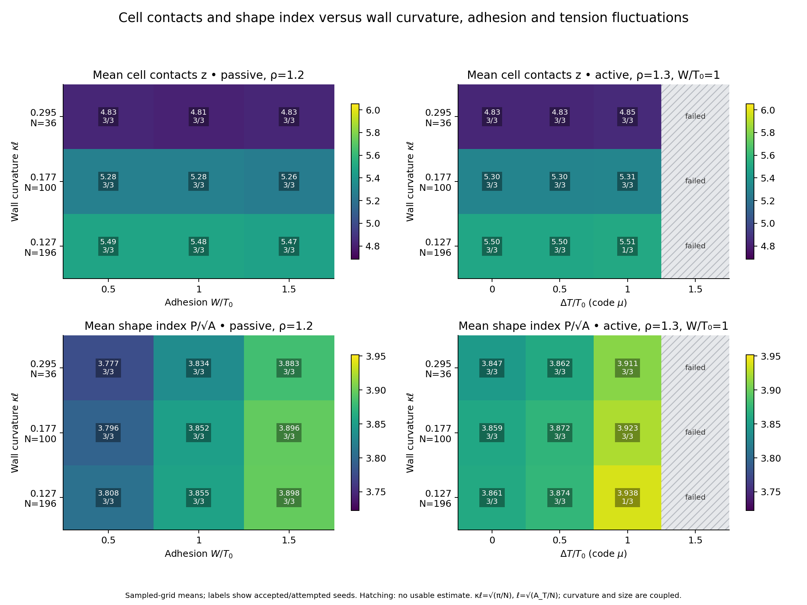
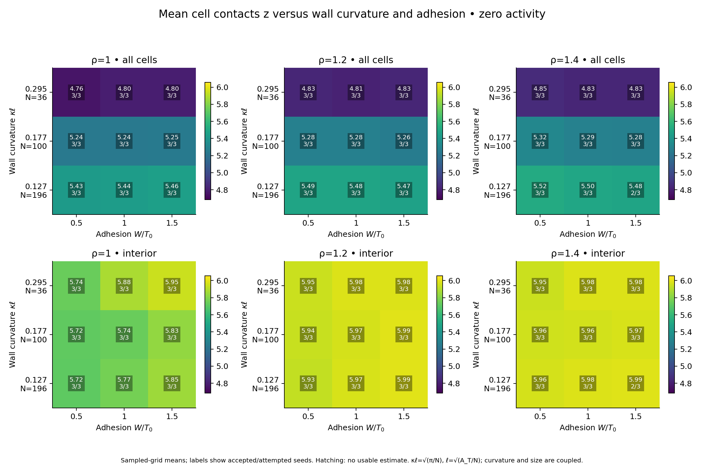
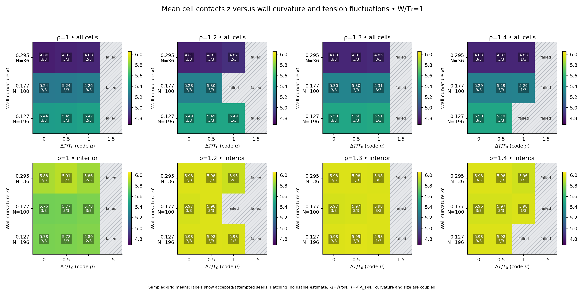
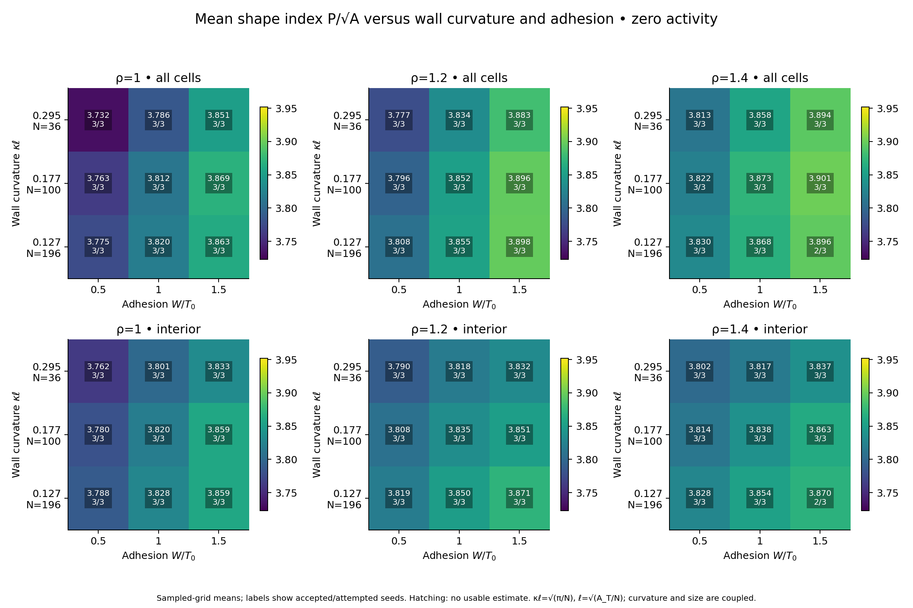
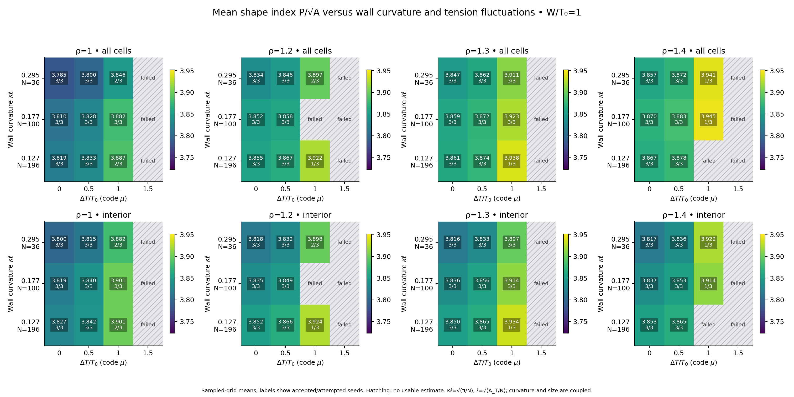
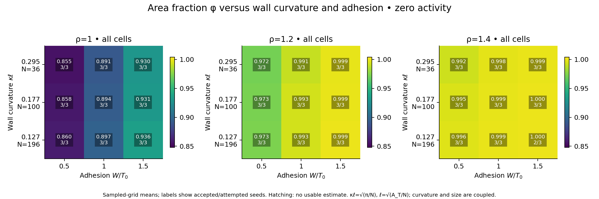
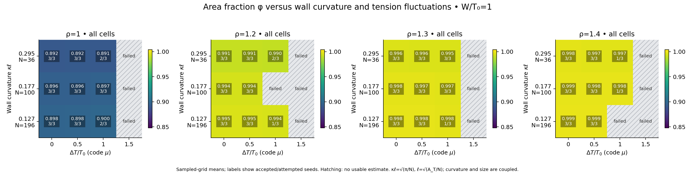
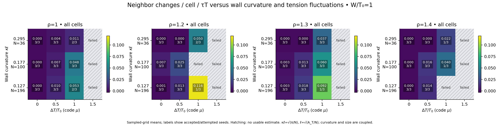
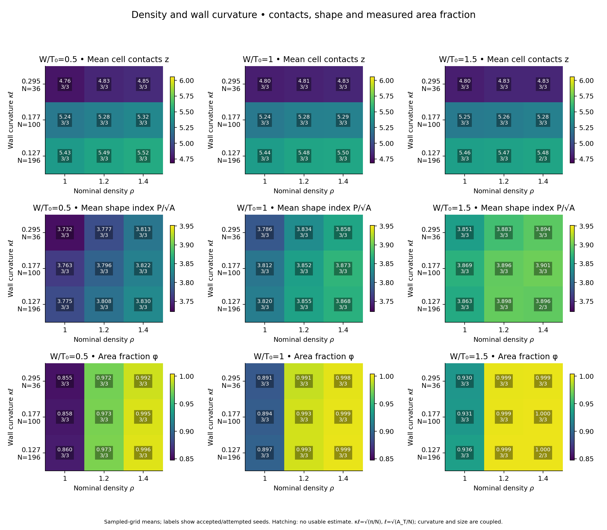
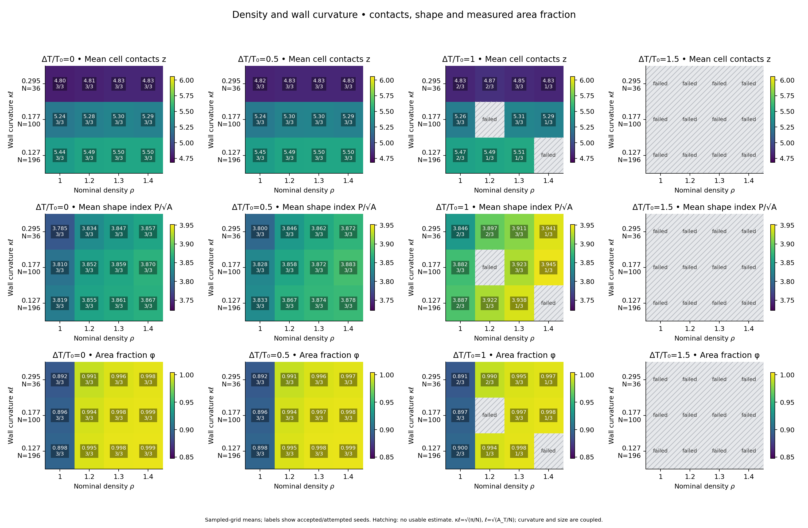
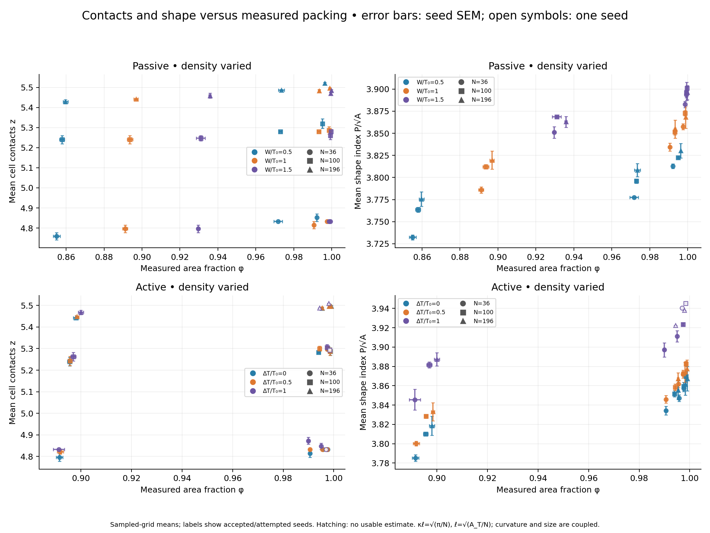